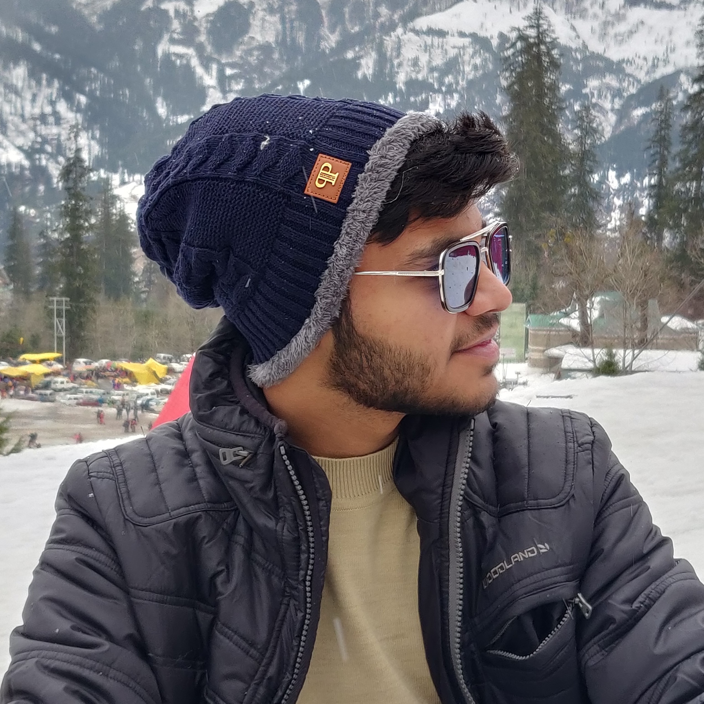

BIO
Hey! My name is Harshit Sharma, and I'm an Engineeering undergrad from Uttar Pradesh, India. I completed my primary, secondary and high school from my home town in UP, and now I'm studing Electronics and Communication Engineeering from KIET Group of Institutons in Delhi, India. Being an engineering undergrad, I'm a Tech Enthusiast and have been always interested in technology. I am a web developer with creative ideas, who is keenly interested in upskilling myself
EDUCATION
(2021-2025)
BTech (Electronics & Communication Engineering)
KIET Group of Instituions, Muradnagar
(2019-2021)
Senior Secondary- Science(PCM)
Silver Bells School, Shamli
(2007-2019)
High School
St. Francis School, Shamli